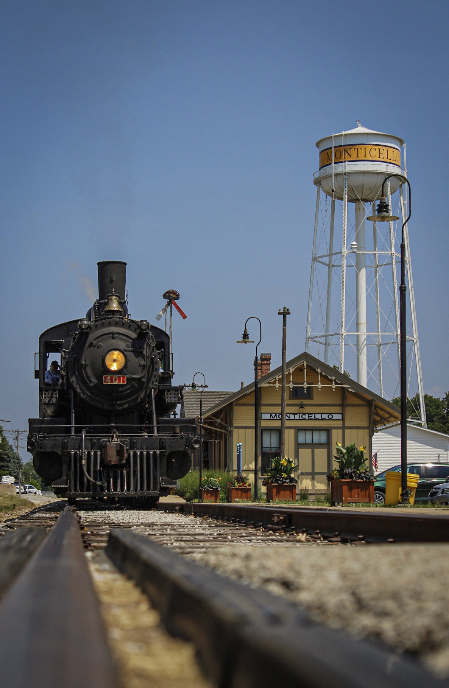
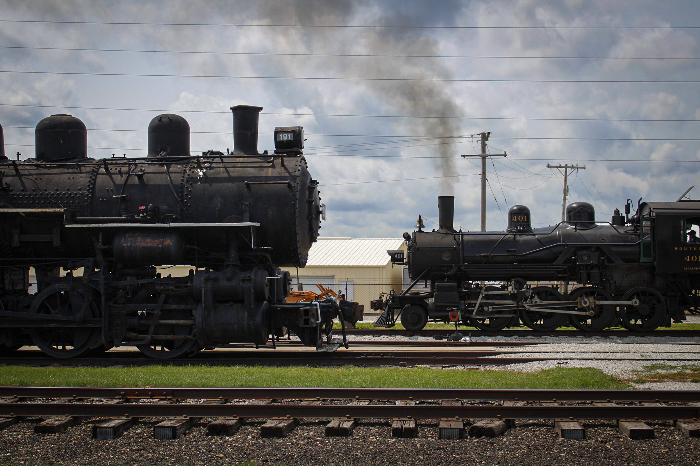

Between the months of May and October you can ride on vintage railroad equipment. You will traverse over the old Illinois Central branch line that ran from Decatur to Champaign. The line may not connect the two towns anymore but riders still get the impression of what it must have been like.
 Photos by: Mark Jensen
For more information, go to the museums website down below.
Visit mrym